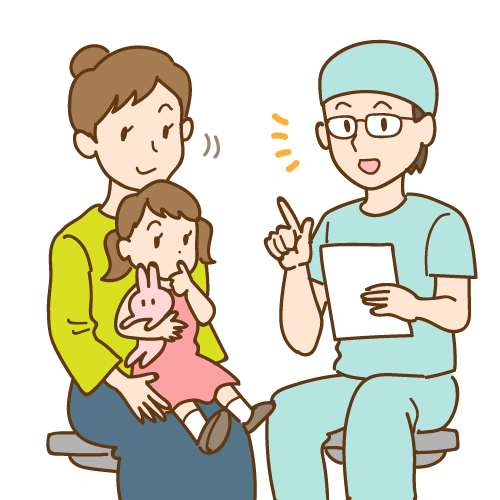
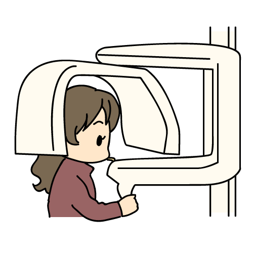
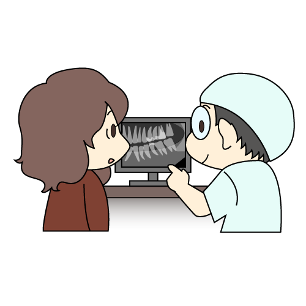
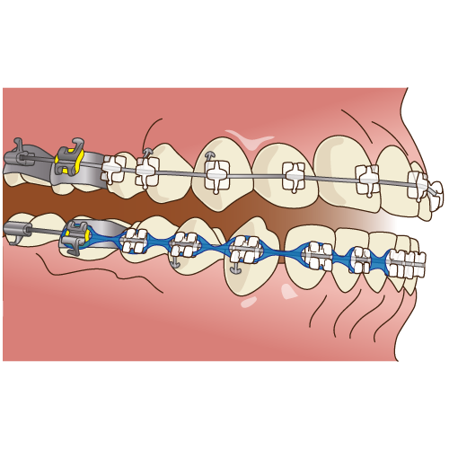
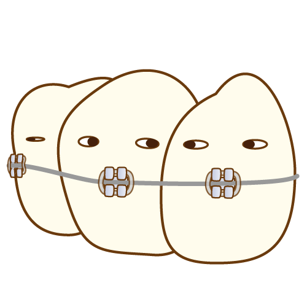
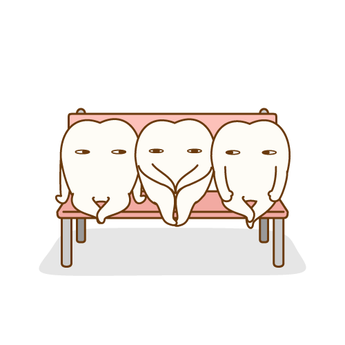
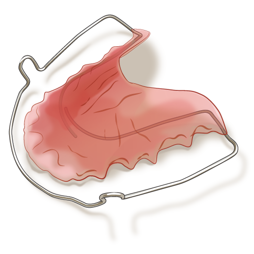
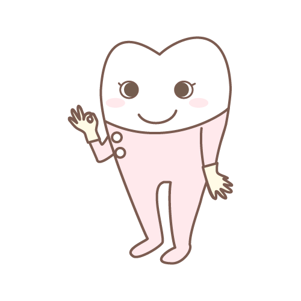

治療の流れ

1. 初診相談（約1時間）
患者さまのお悩みやご希望をお聞かせください。矯正治療の流れ、期間、費用、装置の種類などをご説明し、簡単な口腔内チェックを行います。紹介状がある方はご持参ください。

2. 精密検査（約1時間半）
レントゲン撮影、口腔内写真、歯の型取りなど矯正診断に必要な検査を行います。

3. 診断（約1時間）
検査結果をもとに、治療計画・期間・費用・装置の種類などをご説明します。治療方針にご納得いただいた上で、治療をスタートします。

4. 治療開始（約1時間半）・装置装着
装置の装着を行います。ブラッシング指導や注意点もお伝えします。

5. ワイヤー調整（約30分〜60分）
月に1回程度ご来院いただき、ワイヤーの調整を行います。治療期間は症例により異なりますが、1年半〜2年半ほどが目安です。

6. 装置除去
歯並びや咬み合わせが整い、目標達成後に装置を外します。

7. 保定・定期健診（約15分・3ヶ月〜半年に1度）
後戻り防止のために保定装置（リテーナー）を使用していただきます。定期的なチェックも行います。

8. 治療完了
歯並び・咬み合わせが安定し、装置の使用が不要になったら治療完了です。気になることがあれば、いつでもご相談ください。